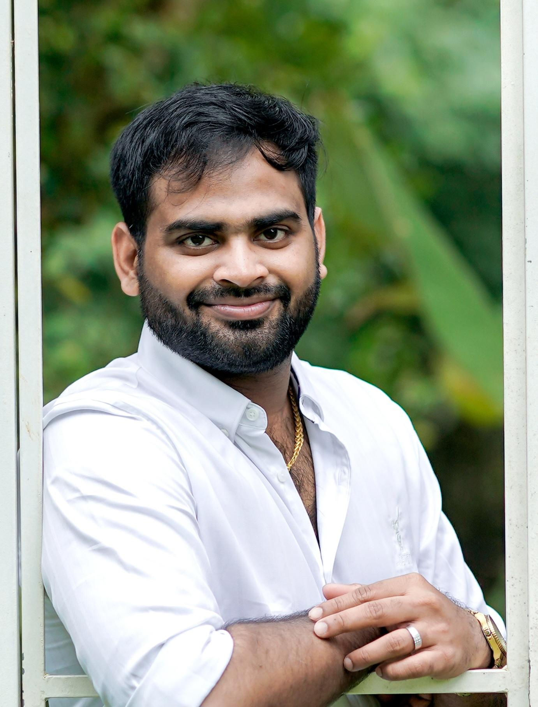

Alvin Jaison
Pega Certified Lead System Architect
Professional Summary
- 8 years of experience in solution design, estimation, and development in various versions of the Pega platform.
- Domain experience: claims, Telecom, Hi-tech Manufacturing, Insurance, and Asset management.
- Integration experience: Connect-REST, Connect-SOAP, Connect-SQL.
- Leadership in new projects, requirements gathering, technical discussions, and gap analysis.
- Led MVP for SRN project for BDUK client with a team of 13 members.
- Strong problem-solving, analytical, and technical skills; efficient under pressure and deadlines.
Work Experience
| Organization |
Designation |
Period |
| Aaseya IT Services Pvt Ltd. |
Technical Specialist |
Dec 2022 - Present |
| Infosys Pvt Ltd |
Consultant |
Nov 2020 - Dec 2022 |
| Zensar Technology |
Software Engineer |
Jun 2017 - Nov 2020 |
Certifications
- Pega Certified Lead System Architect
- Pega Certified Senior System Architect
- Pega Certified System Architect
- Pega Certified Decision Consultant
Project Experience
-
SRN (Shared Rural Network) – BDUK (Pega 8.7)
Technical Specialist
Led a team to deliver a grant claims application for the UK government’s SRN initiative, improving 4G coverage. Responsible for solution design, process/data modeling, sprint planning, code reviews, and deployment pipelines.
-
Order Management/Platform Team – Verizon (Pega 8.6)
Consultant
Led implementation of platform enhancement tools, automated product rule creation, defect analysis, and team mentoring. Owned new case type processes from analysis to deployment.
-
Artemis – CISCO (Pega 8.5)
Senior Developer
Developed reusable components, worked on portals, access groups, and UI. Responsible for data modeling, migration, and end-to-end user story ownership.
-
Apollo (IBOP’s) – CISCO (Pega 8.5)
Senior Developer
PRPC Case Management, agents, SLA, job schedulers, UI, production support, and full user story lifecycle.
-
Cathie – Automobile Association (Pega 7.4)
Software Engineer
Developed and managed flows, activities, harnesses, and assignments. Provided bug fixes, client-side validation, and production support for a major UK motoring association.